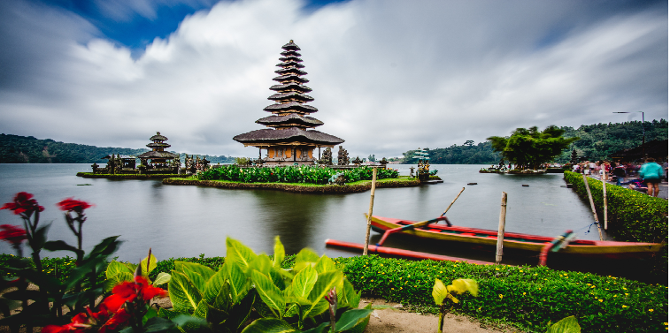
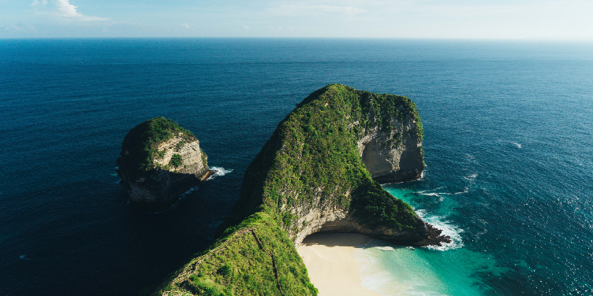
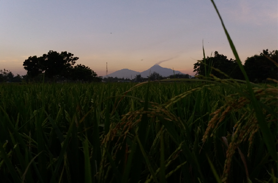

Danau Baratan Bali

Sebuah danau yang terletak di kawasan bedugul, desa candi kuning, kecamatan baturiti,
kabupaten tabanan, Bali. berada dijalur provinsi yang menhubungkan denpasar-singaraja serta letaknya
dekat dengan kebun raya eka karya menjadikan tempat ini menjadi salah satu andalan wisata pulau bali.
Anda Ingin Kesini?? Hubungi Kami untuk Informasi Selengkapnya Mengenai Paket Tour Yang Akan Anda Gunakan.
Hubungi Contact Ini :
Contact : +6287752931600 (AdityaNP)
Nusa Penida Bali

Nusa Penida Merupakan Salah Satu Pulau bagian dari Provinsi Bali, gambar diatas merupakan
salah satu wisata pantau bali yang sangat harus anda kunjungi, nusa penida adalah salah satu nusa terbesar
dari tiga pulau nusa, yang terletak di pulau bagian di Bali, antara lain nusa lembongan, nusa ceningan.
Hubungi Contact Ini :
Contact : +6287752931600 (AdityaNP)
Merapi dan Merbabu

Merapi-Merbabu, merupakan suatu pusat wisata di jogja, dimana disini anda dapat menikmati ketinggian,
dan dapat melihat jogja dari tempat ketinggian, jarak dari kota jogja ke merbabu atau merapi cukup jauh,
memakan waktu perjalanan skitar 2-3 jam, tapi tenang, anda akan kami antar dengan fasilitas yang kami sediakan.
Hubungi Contact Ini :
Contact : +6287752931600 (AdityaNP)